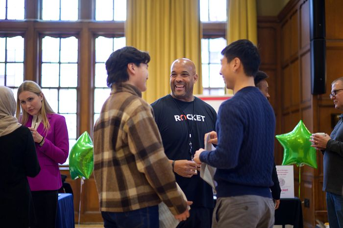

Learn from Informational Interviews
Informational Interviews are a great way to learn more about a role, gain real-world advice, and find a potential mentor along your career journey. While they may not center around job openings, they can provide important insight that helps you on your path to a role of interest. Informational interviews can be structured in three parts: the introduction, the Q&A, and the closing portion.
Introduction
Start out the conversation with small talk. This can help them learn more about you as a person, and it can break the ice before diving into more specific questions. Thank them for their time, and share something that the interviewee can build off of. For examples, talking about the weather can prompt a discussion about where each person is based locally.
Q&A
Use the TIARA method as a guide for brainstorming questions to ask.
- Trends: Try to make trend questions specific to the company, industry or function for the person you are interviewing. Ex: "How is your company keeping pace with all the innovation in the Industry?”
- Insight: Insight questions slowly bring the interview down to a personal level. Ask your interviewee about their specific experiences, day-to-day work, and career pathway. Ex: “What is the most challenging part of your job?”
- Advice: Ask for advice that brings the conversation back to you. Ex: “What should I be doing right now to prepare myself for a career in this industry?”
- Resources: Ask for tools, blogs, websites, and other resources that the interviewee can recommend. This begins to close your conversation while giving you reasons & opportunities to follow up with your interviewee later! Ex: “What resources should I be looking at to learn more about this industry/function?”
- Assignments: Asking “assignment” questions can give you another reason to follow up with your interviewee and show your dedication to the field. Ex: “What tools or skills does your team really value for new employees? I’d like to start working on those during my time at UMSI.”
Closing
Wrap up the conversation by defining the next steps you'll take to act upon their advice. Be sure to send a follow-up thank you email as well!
Click to see workshop slides on Informational InterviewsWhere to Find Alumni
There are a few places you can start reaching out to alumni today to start building your network.
- UMSI LinkedIn Group and LinkedIn search
- CareerLink (including Alumni Career Connections and Networking events!)
- UCAN
- Friends and peers in your personal network
- Faculty, supervisors, and mentors
Find email templates, writing tips, in this workshop slideshow!